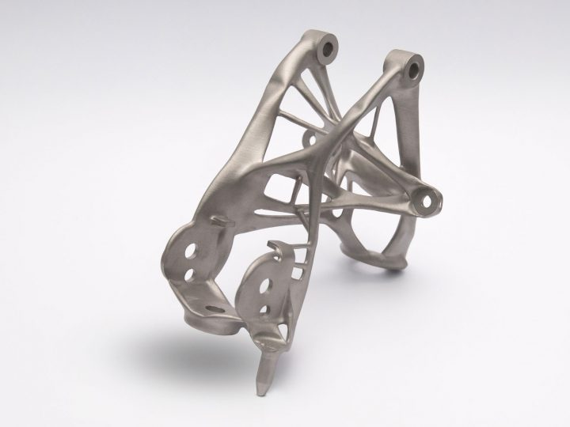

Researchers and scientists endeavouring to create new and advanced additive manufacturing systems that can be adaptable to a broader range of materials. More number of materials can be used with new advanced additive manufacturing or 3D printing machine. Numerous materials are in use for additive manufacturing systems which are commercially available, but every material cannot be used for every process, thus each material is specialized for particular applications. The deposition process for each method is unique. Each new, specialized application may require its own set of unique materials or even its own specialized system. Every year, new industrial-grade 3D printers are being tested and commercialized. Each available material must be compatible with these newly developed machines to ensure the durability and strength of additively manufactured parts and devices. The newly developed systems and the range of materials are being developed which will help to increase compatibility and efficiency of these systems, thus enhancing the productivity, printing process, capacity to build large structures, and loading and unloading procedures. This will decrease the costs of additive manufacturing compared to other traditional manufacturing methods, ultimately driving further industry adoption and expanding the range of use cases. This technology can be further extended to other sectors such as construction, repairing of parts, medical sector, etc. Thus, Additive Manufacturing can be considered as the potential field in manufacturing sector with some limitations as well as some advantages.
